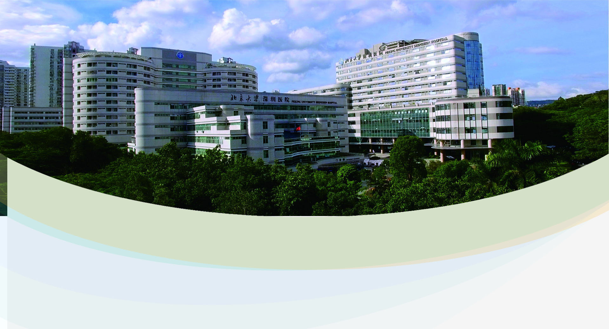
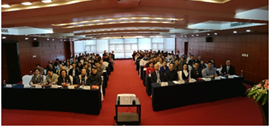

首页
医院概况
医院简介
医院文化
领导信息
医院荣誉
联系方式
医院新闻
医院公告
患者服务
门诊指南
就诊流程
科室分布
专家排班
检查须知
健康宣教
来院地图
科室介绍
人才招聘
应聘须知
应聘联系
招聘岗位
就医网
医学网

医院新闻
HOSPITAL NEWS
首页
>
医院新闻
医院新闻
我院成功举行戊型肝炎预防与控制培训会
2019-01-09
2018年12月28日下午，全员医护人员按时来到综合楼七楼大会堂，参加传染病培训会。一年一次的传染病培训工作，依然是医院防保科重要工...
我院护理系统顺利通过2018年ISO9001质量管理体系外审
2019-01-04
2018年12月27~28日，瑞士SGS公司刘彦君女士一行五位资深评审专家对我院护理系统进行了为期两天的ISO9001质量管理体系现场监督评审...
陈芸院长带队参加北京大学医学部医院管理会议
2019-01-02
2018年度 12月28日北京大学医学部医院管理工作会在医学部逸夫楼209报告厅顺利召开。 会议由医学部副主任刘晓光主持。国家卫生健康...
我院首发广东省首张电子健康卡（码)
2018-12-29
12月28日下午，广东省首张电子健康卡（码）在我院首发，市民持电子健康卡（码）就可走遍全市、全省医院。计划到2020年，电子健康卡（码）覆...
首都医科大学北京宣武医院陈彪教授团队国家老年疾病临床医学研究中心深圳分中心帕金森病诊疗中心揭牌
2018-12-25
首都医科大学宣武医院陈彪教授团队、国家老年疾病临床医学研究中心深圳分中心帕金森病诊疗中心于2018年12月24...
我科成为深圳市甲状腺、乳腺专业唯一一家全部进入三大主流学术团体的省常委单位
2018-12-24
在12月22日举行的“广东省抗癌协会乳腺癌专业委员会第四届全体委员会议”上，我院甲乳外科副主任何劲松入选常务委员。至此，三大主流...

“深圳市健康管理协会感染性疾病专业委员会” 正式成立
2018-12-21
为推动深圳市健康事业发展，加强我市感染性疾病领域医护人员的学术交流，进一步提高我市感染性疾病的预防、诊治和康复的规范化水平...
首届CAOS关节镜在关节外应用国际论坛暨前交叉韧带重建新技术国际研讨会成功举行
2018-12-18
12月15日至16日，由中国医师协会骨科医师分会运动医学专业委员会、深圳市医学会、北京大学深圳医院、上海市医药卫生发展基金会主办
我院当选为深圳市医学会第四届神经内科专业委员会主委单位
2018-12-17
经过一个多月的筹备工作，2018年12月14日下午，深圳市医学会第四届神经病学专业委员会换届选举大会在深圳市富临酒店举行。市医学会...
“深圳市医学会胸外科专业委员会2018年年会暨专科学组成立大会暨2018肺癌规范化诊治莲花山论坛”在我院成功举办
2018-12-17
2018年12月15日至17日，由深圳市医学会胸外科专业委员会主办，北京大学深圳医院胸外科协办的“深圳市医学会胸外...
首页
上一页
1
2
3
4
下一页
尾页